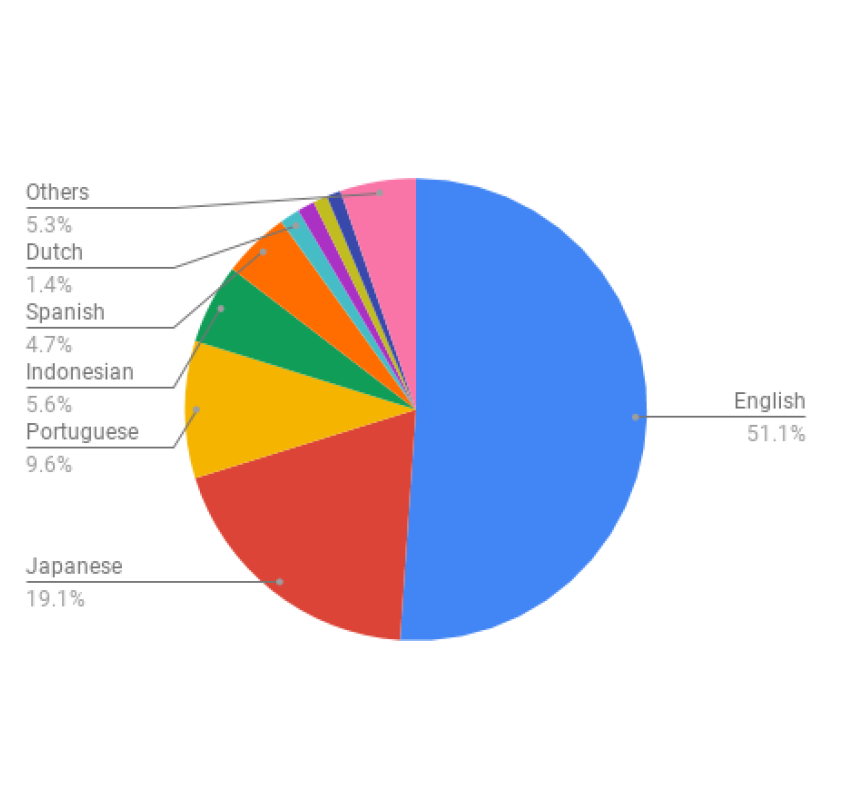

|
Hi! I am currently working as a NLP Researcher helping make Bixby, Samsung‘s AI assistant smarter.
Currently seeking PhD opportunites in NLP! In my spare time, I like to Sketch, Origami, learn new languages or play Piano and Flute. |

|
{kind=link}
ResearchFollowing are my areas of interest where I had some prior publication experience - Sentiment Analysis, Reading Comprehension, Domain Adaptation, Question Generation, Catastrophic forgetting, Curriculum Learning, Resource Scarce Settings and Model Interpretation. Representative papers are highlighted. |
|
|
Model InterpretabilityCurriculum Learning, by its nature, involves a lot of hyperparameters and design choices. These include - the curriculum ordering that delegates samples as "easy" or "difficult", the task itself, and the pacing function, which determines the pace by which the model is presented with the data. These complexities make the assessment of CL's effectiveness relatively intractable. Hence, I worked on analyzing CL's effectiveness to understand best when it can be useful. I used attention visualizations to explain that CL works by breaking down a harder problem into multiple easy sub problems. This manuscript is under review at EACL 2021. The in-depth exploration of CL for Sentiment Analysis culminated in my Master's Thesis. I find CL especially essential to NLP's problems, where lately, performance improvements are made based on increasing parameters rather than efficiently training just a single model.
Given an image of an object and a NeRF of of an object and a NeRF of that object, you can estimate that objthat object, you can estimateof an object and a NeRF of that object, you can estimate that obj that of an object and a NeRF of that object, you can estimate that objobject's pose.
[1] Sequential Learning of Convolutional Features for Effective Text Classification
[2] Towards Adapting Curriculum Learning for Sentiment Analysis: Challenges and Analyses |

|
Robust and Efficient Natural Language Processing relies heavily on laborious tagging since users do not add feedback to their conversations explicitly. The conversations users have with Bixby vary in nature across applications and domains such as the Clock app or the Reminder app. In such cases, Domain Adaptation (DA) is an important idea to minimize manual annotations for each of these domains. I proposed DA to utilize annotations of one domain to build feedback models for another. I suggested a gated convolutional architecture for this problem, where the gated mechanism can filter out domain-specific information.
[1] Sequential Domain Adaptation through Elastic Weight Consolidation for Sentiment Analysis
[2] Gated Convolutional Neural Networks for Domain Adaptation
[3] A SentiWordNet Strategy for Curriculum Learning in Sentiment Analysis
[4] A Position Aware Decay Weighted Network For Aspect Based Sentiment Analysis
[5] Effectiveness of Self Normalizing Neural Networks for Text Classification |
|

|
Resources for under-represented languagesModern machine learning algorithms rely heavily on data,
and this reliance has adverse effects in resource-scarce settings.
Although the Telugu language is abundantly spoken, NLP tools and
labeled datasets have been rare making it a low resource language.
Telugu is a morphologically rich language.
Hence, I improved two pre-existing lexicon-based resources.
While resource creation for scarce languages is essential,
hand-curating datasets can be time and labor intensive.
[1] Twitter corpus of Resource-Scarce Languages for Sentiment Analysis and Multilingual Emoji Prediction
[2] Hindi Question Generation Using Dependency Structures
[3] Towards Automation of Sense-type Identification of Verbs in OntoSenseNet
[4] Towards Enhancing Lexical Resource and Using Sense-annotations of On-toSenseNet for Sentiment Analysis
[5] HindiRC: A Dataset for Reading Comprehension in Hindi
[6] BCSAT: A Benchmark Corpus for Sentiment Analysis in Telugu UsingWord-level Annotations |
Service |
 |
Reviewer: ACL 2020, EMNLP 2020, NLP+CSS@EMNLP 2020, EACL 2021, ACL 2021
Sessions Chair: NLDB 2019 |

|
Teaching Assistant, Natural Language Processing, Monsoon 2016, Dr. Manish Shrivastava
Teaching Assistant, Natural Language Processing, Monsoon 2017, Dr. Manish Shrivastava Teaching Assistant, Natural Language Applications, Spring 2017, Dr. Manish Shrivastava |
|
Design and source code from Jon Barron's website
|